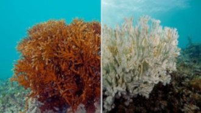

O que é aquecimento global?
Os gases de efeito estufa têm impacto cada vez maior no dia a dia em todo o mundo. Confira alguns aspectos científicos para explicar o que é esse fenômeno que provoca mudanças climáticas e quais são as suas consequências.
Desde o início dos registros climáticos, o ano de 2020 foi o mais quente no mundo todo. Em escala global, o primeiro semestre de 2021 terminou entre os seis mais quentes.
Em agosto passado, a Espanha atingiu sua máxima histórica com 47,4ºC e a Europa, com 48,8ºC. Em 2040, essa alta da temperatura poderá atingir um aumento de 2,2ºC graus em relação aos níveis pré-industriais e, em 2100, poderemos observar uma alta de 3,8ºC, segundo a análise de um grupo de mais de 80 cientistas no relatório Mudanças climáticas e ambientais na bacia do Mediterrâneo, realizado pela rede Mediterranean Experts on Climate and Environmental Change (MedECC).
As geleiras estão derretendo a uma velocidade nunca vista antes, o nível do mar está subindo devido ao degelo, as florestas estão se tornando mais áridas e a fauna e a flora estão lutando para sobreviver em um cenário de mudanças vertiginosas e complexas que muitas vezes têm um grave impacto na biodiversidade. O aumento geral das temperaturas, os fenômenos climáticos extremos, as ondas de calor, as inundações, as quebras de safra, os migrantes climáticos e uma longa lista de consequências colocam as mudanças climáticas em primeiro plano na agenda global devido aos seus efeitos em todo o mundo.
Evidências científicas afirmam que a atividade industrial humana causou a maior parte do aquecimento global do século passado por meio da emissão de gases de efeito estufa que retêm o calor, e cujos níveis estão cada vez mais altos.
De fato, pela primeira vez desde o início dos registros, as conclusões de um estudo recém-publicado em março passado colocam em xeque as estimativas de evolução climática ao revelar que a capacidade da maior floresta do mundo de absorver carbono da atmosfera foi reduzida a tal ponto que já poderia estar liberando mais carbono do que armazena.
Mas o que exatamente é o aquecimento global e como isso afeta o nosso planeta e o nosso dia a dia? Vamos observar alguns pontos científicos para explicar todos os aspectos desse fenômeno que já permeia nosso cotidiano em todos os níveis.
Aquecimento dos oceanos e branqueamento dos corais
Chamamos as consequências geradas por esses gases de aquecimento global, mas na verdade esse fenômeno está causando uma série de mudanças nos padrões climáticos da Terra em longo prazo, que variam de acordo com a localização. À medida que a Terra gira a cada dia, esse novo calor, por sua vez, também gira, retirando a umidade dos oceanos, aumentando em um local e se consolidando em outro, mudando de forma definitiva o ritmo do clima ao qual todos os seres vivos estão acostumados.

Quais soluções temos à nossa disposição para desacelerar esse aquecimento? Como vamos lidar com as mudanças que já iniciamos? Enquanto tentamos compreender isso, a face da Terra como a conhecemos, seus litorais, suas florestas e suas montanhas de neve estão ameaçadas.
O efeito estufa
O “efeito estufa” é o aquecimento que ocorre quando determinados gases na atmosfera da Terra retêm o calor. Esses gases deixam passar a luz, mas mantêm o calor, como as paredes de vidro de uma estufa.
Primeiramente, a luz do Sol brilha na superfície da Terra, onde é absorvida, e depois retorna à atmosfera na forma de calor. Na atmosfera, os gases de efeito estufa retêm parte desse calor e o restante escapa para o espaço. Quanto maior a quantidade de gases de efeito estufa, mais calor é retido.
Os cientistas têm conhecimento do efeito estufa desde 1824, quando Joseph Fourier calculou que a Terra seria mais fria se não houvesse atmosfera. Esse efeito estufa é o que torna o clima na Terra adequado para a vida.
Sem ele, a superfície da Terra seria cerca de 15,5 ºC mais fria. Em 1895, o químico suíço Svante Arrhenius descobriu que os humanos poderiam aumentar o efeito estufa produzindo dióxido de carbono, um gás de efeito estufa. Foi o início de 100 anos de pesquisa climática que nos deu uma compreensão sofisticada do aquecimento global.
(Artigo relacionado: Brasil já sente impactos das mudanças climáticas e situação pode se agravar)
Os níveis dos gases de efeito estufa (GEE) aumentaram e diminuíram ao longo da história da Terra, mas se mantiveram bastante constantes nos últimos milhares de anos. As temperaturas médias globais permaneceram bastante constantes durante esse período, mas só até recentemente. Por meio da queima de combustíveis fósseis e outras emissões de GEE, os seres humanos estão provocando o aumento do efeito estufa e aquecendo a Terra.
Os cientistas costumam usar o termo “mudanças climáticas” em vez de “aquecimento global”. Isso ocorre porque, à medida que a temperatura média da Terra aumenta, os ventos e as correntes oceânicas movem o calor ao redor do globo de modo que podem resfriar algumas áreas, aquecer outras e alterar a quantidade de chuva e de neve que cai. Como consequência, o clima é alterado de forma distinta em diferentes áreas.
As mudanças de temperatura não são naturais?
A temperatura média global e as concentrações de dióxido de carbono (um dos principais gases de efeito estufa) vêm oscilando em um ciclo de centenas de milhares de anos, à medida que a posição da Terra em relação ao Sol se modifica. Como resultado, ocorreram as diferentes eras glaciais.
No entanto, durante milhares de anos, as emissões de GEE na atmosfera foram compensadas pelos GEE naturalmente absorvidos. Portanto, as concentrações de GEE e a temperatura ficaram bastante estáveis. Essa estabilidade permitiu que a civilização humana se desenvolvesse em um clima consistente.
Outros fatores, às vezes, têm uma breve influência sobre a temperatura global. As erupções vulcânicas, por exemplo, emitem partículas que resfriam temporariamente a superfície da Terra. Porém, isso não tem um efeito que dure mais do que alguns anos. Outros fenômenos, como o El Niño, também ocorrem brevemente e em ciclos previsíveis.
No entanto, desde a Revolução Industrial, os humanos aumentaram a quantidade de dióxido de carbono na atmosfera em mais de um terço. Essas mudanças tão significativas ocorreram historicamente ao longo de milhares de anos, mas atualmente ocorrem em apenas algumas décadas.